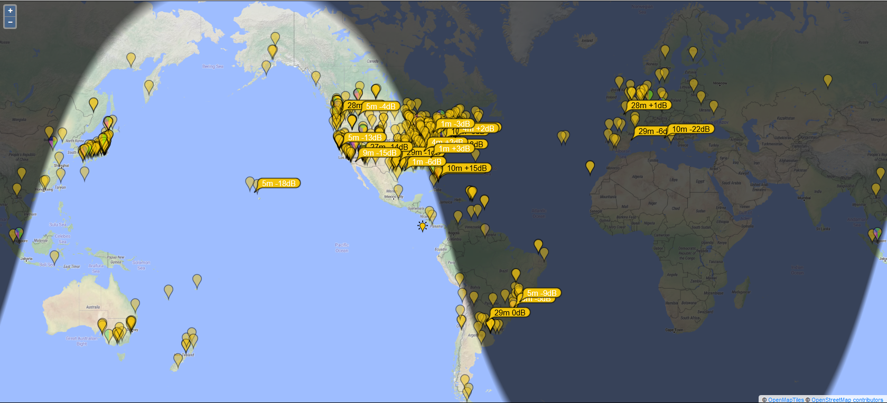

On 20M FT8 F/H (14.085 with some RTTY interference) the pattern
of who is hearing them makes their beam pattern pretty clear.
Note that it will mostly show, those trying to work them...
West of the Rockies, is in a null.
Rick NK7I
